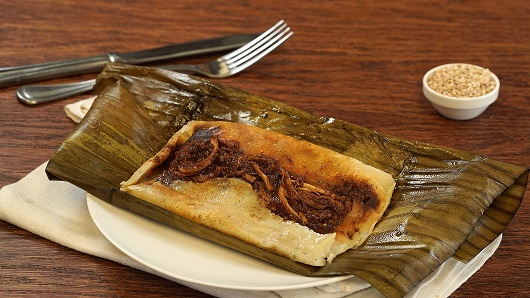

Tamales

How to make tamales
Tamales are a traditional Mexican dish consisting of corn husks or plantain leaves stuffed with tasty fillings like meats, cheeses, vegetables, or chiles. These delicious treats can be paired with other offerings like tomatillo salsa or a mug of hot atole, smothered with homemade chili, or simply savored on their own.
What you will need...
- 24 tamale papers or corn husks.
- 1 pound ground beef.
- 1 medium onion, chopped.
- 4 1/4 cups White Lily® Enriched Self-Rising White Cornmeal Mix, divided.
- 2 1/2 tablespoons chili powder, divided.
Steps
Now that you have your ingredients this is how to make tamales
- Lay the soaked corn husk on a flat surface.
-
Spread your masa on the corn husk.
- Add your filling/sauce to the center of the masa.
-
Fold the corn husk in half vertically.
Back